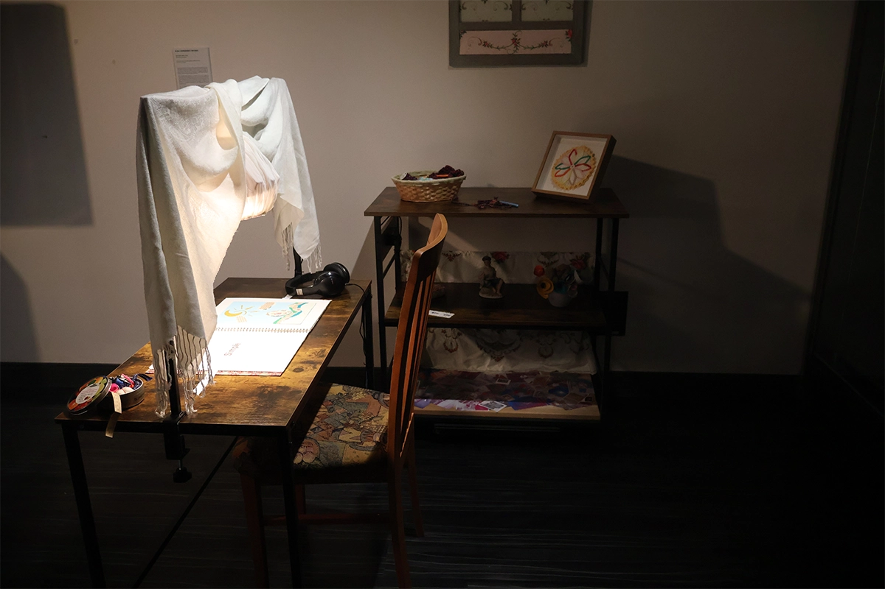

Elisa Hernández Riveiro
Raconte-moi, 2026
Issue d’un parcours familial marqué par l’immigration, Elisa arrive au Canada durant son enfance. Elle est aujourd’hui une artiste basée à Tiohtià:ke/Mooniyang/Montréal. Détentrice d’un Baccalauréat en stratégies de production culturelle et médiatique de l’Université du Québec à Montréal (UQÀM), elle a travaillé pendant plusieurs années dans la gestion de projets culturels et publicitaires. Elle renoue maintenant sa relation avec l’un de ses premiers amours – l’art – en poursuivant un DESS en arts, création et technologies à l’Université de Montréal.
Elisa Hernández Riveiro s’intéresse à la mémoire et aux souvenirs fragiles qui la composent. L’état nostalgique de l’artiste, façonné par la distance géographique avec sa famille, nourrit une affection profonde pour les moments vécus, transmis ou recueillis auprès d’autrui. Entre élan de préservation et tentative d’acceptation d’une perte, à son sens inévitable, son œuvre soulève le ressenti résiduel d’une vie antérieure et d’un espace-temps désormais inaccessible. Sa démarche reste teintée par un questionnement existentiel et le désir inatteignable de préserver à jamais l’être aimé.

installation interactive audiovisuelle, matériaux mixtes
dimensions variables
Se faire le sanctuaire de récits de vie : telle est l’aspiration de Raconte-moi. Face à l’état fragile de la mémoire, l’installation exprime le profond désir de préserver ses plus précieux souvenirs, de les protéger de l’usure du temps. Au fil des pages d’un livre interactif, le public est invité à plonger dans les anecdotes racontées par différents individus. L’œuvre explore ainsi l’intangible – le patrimoine émotionnel qui perdure, comme une empreinte laissée par notre vécu.